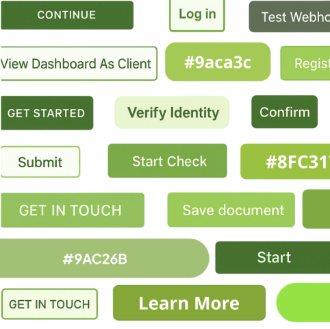
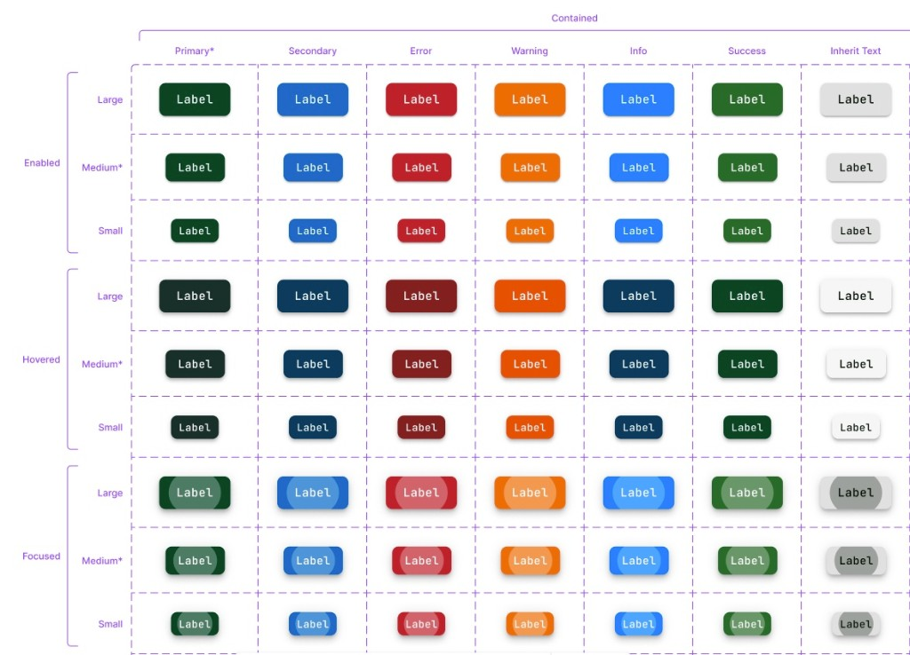
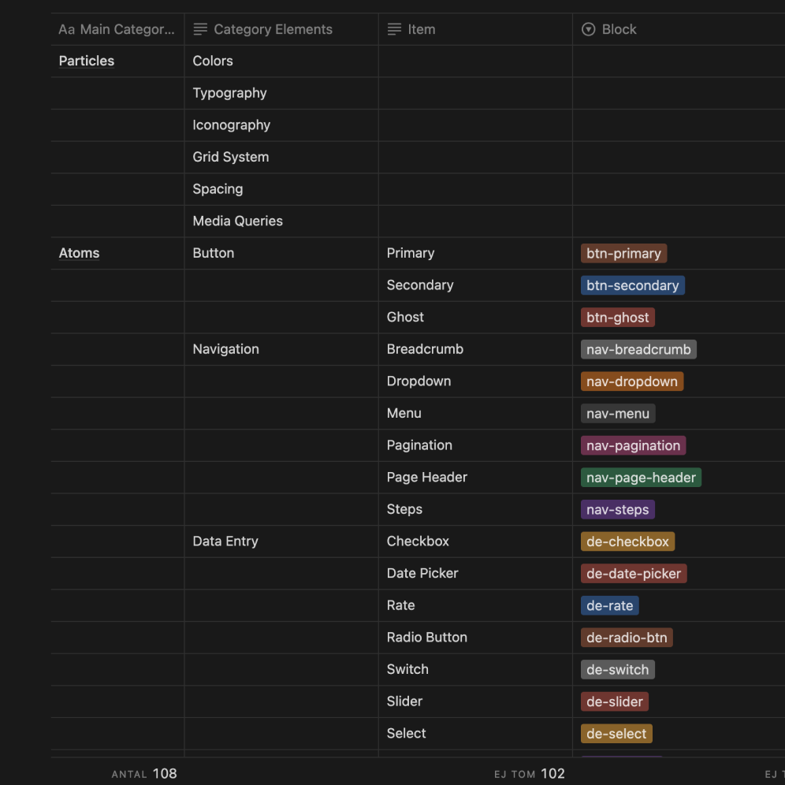
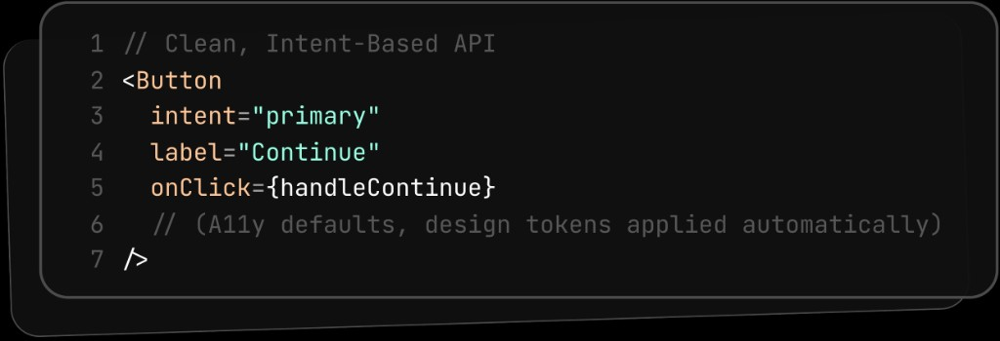
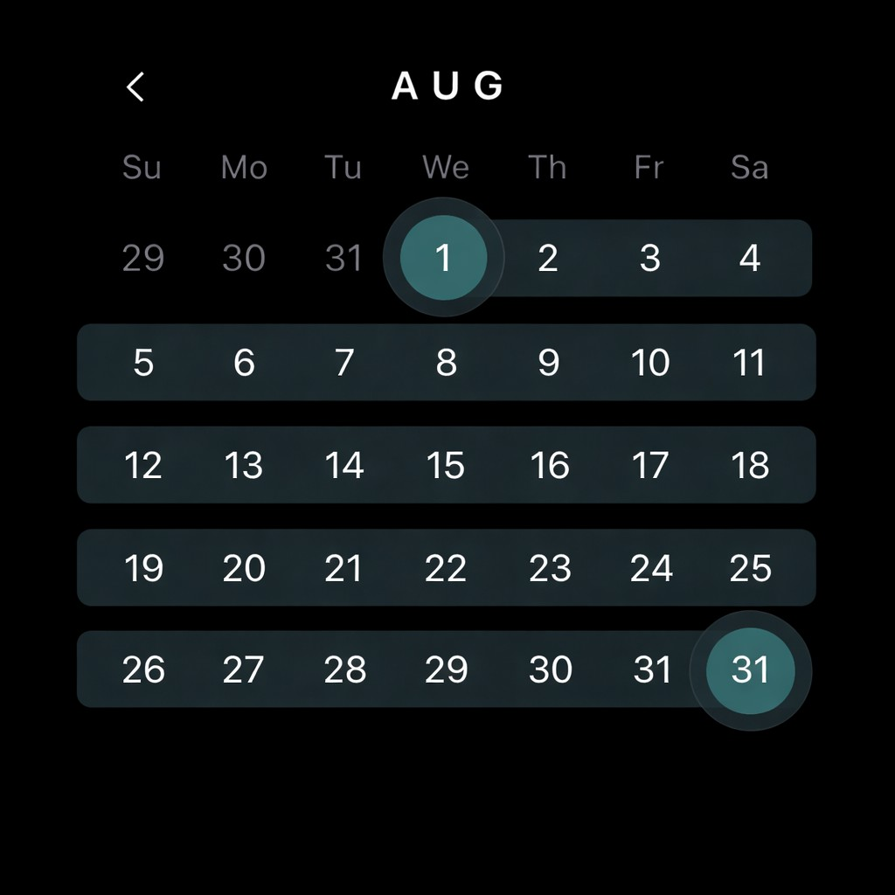

Yubico had five products built by three separate engineering teams — each with their own UI, their own code conventions, and no shared components. A rebrand was coming, and without a common foundation every team would have to implement it independently. I led the effort to build one system they could all share.
I ran the full arc: auditing existing UIs across stacks, negotiating a shared naming convention with every team, designing the component library and token structure in Figma, establishing the governance model, and building a migration playbook so legacy products could adopt without a rewrite. I also designed the Figma-to-code pipeline that would later become its own case study.
From a collaborator
“I had the unique opportunity to collaborate with Felix on a comprehensive design system project, where his role as the UX lead was nothing short of exemplary. His approach to integrating and guiding teams across different departments was marked by empathy and a deep understanding of collaborative dynamics… His adaptability, respect for diverse viewpoints, and innovative problem-solving approach were consistently on display…”
Eden, Senior Software Engineer — Read on LinkedIn

The marketing site ran on WordPress + React. The console app used Svelte + Tailwind. The admin tools were built on MUI. Add docs, email templates, and mobile apps, and you had six surfaces with no shared design language. Buttons looked different across products. The brand's primary color existed in four variations — the result of Pantone-to-hex conversion differences, founder preferences, and individual attempts at fixing contrast.
A company rebrand was about to make it worse: without a shared system, every team would interpret the new brand independently, multiplying the inconsistencies.

We set four targets before starting any design work:

Before building anything, I audited every product for duplicate patterns, inconsistent naming, and accessibility gaps. We mapped the findings into a single document: what exists, what it's called, and where it lives. This gave every stakeholder — designers, engineers, PMs — the same set of facts to discuss.
We didn't debate which shade of blue was "correct." We agreed on what each color was for, and deferred the cosmetic choices to the rebrand. The goal was to make saying yes easy. As the facilitator bridging teams on different islands, I either drove decisions based on first principles or sold the system with a value-agnostic approach — showing teams what they'd gain without requiring them to change how they already worked.
I hosted internal brown bag sessions for designers and engineers: shared libraries, how each product maps in, contribution paths, and how to adopt it without slowing teams down.
Video of a brown bag session

Each component — Button, Dialog, Menu, Table — has a small API that focuses on what it does, not how it looks. Colors, spacing, and states come from the design tokens automatically. Focus rings, contrast ratios, and motion preferences are all built into the defaults. Every component ships with clear guidelines, do's and don'ts, and code examples so teams can self-serve without asking the systems team.

New components go through a lightweight proposal process. Updates ship as versioned packages with deprecation warnings, so nothing breaks overnight. Automated tests catch visual regressions and accessibility failures before code merges. I focused on making the system easy for designers first — once they were on board, engineers followed naturally because the handoff became simpler.
5 products
Target 3→5 shipped
Three engineering teams on the system in two quarters.
30–45% faster handoff
Target 25%→30–45%
Time-to-merge for UI changes dropped 20–35%.
~70% fewer inconsistencies
Target 50%→~70%
Visual regressions caught before merge, not after shipping.
100% WCAG 2.2 AA
Required→All components
Contrast checked automatically on every change.
The first two teams adopted quickly because I'd involved them from the audit stage. The third team — who joined mid-rollout — had a slower start because they hadn't been part of the naming negotiations and the system felt imposed rather than collaborative. If I did it again, I'd run a condensed onboarding workshop for any team joining after the initial build, so they'd feel ownership over the decisions rather than inheriting them.